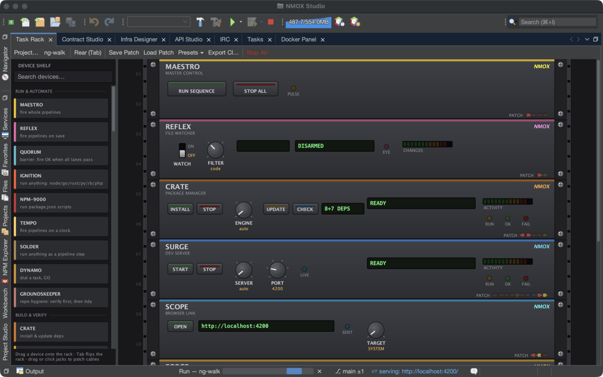
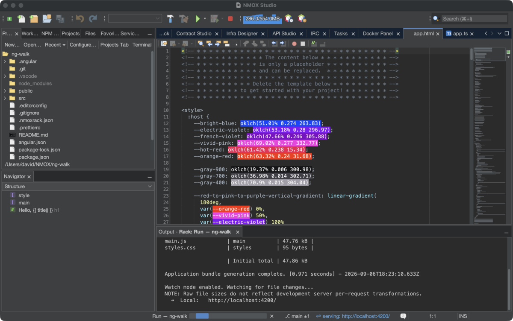
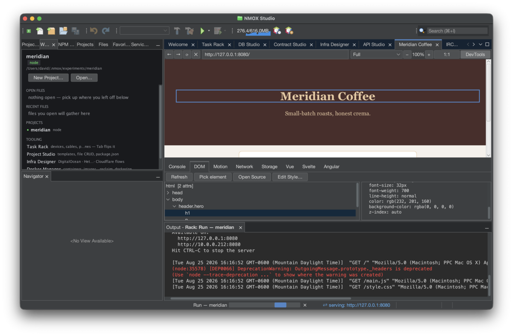
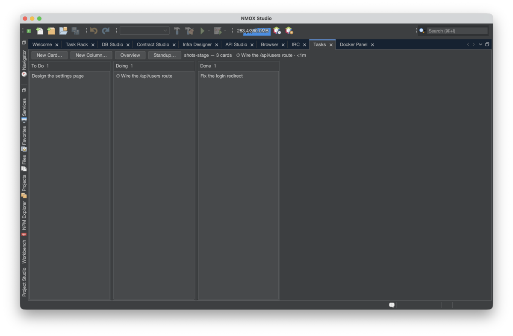
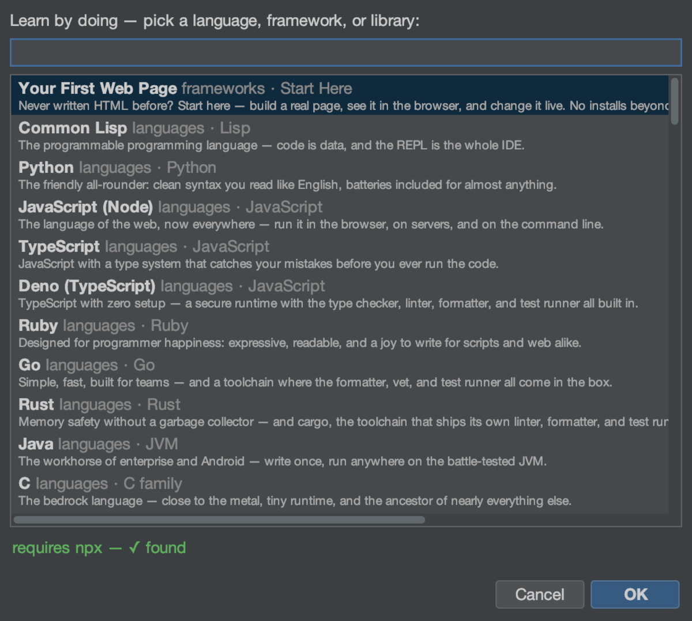
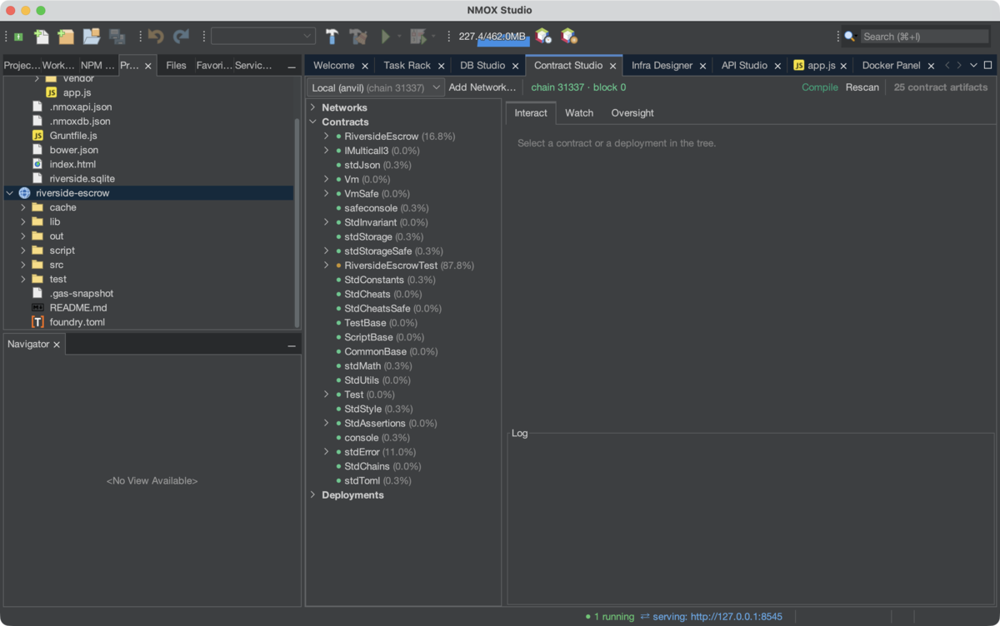

The loop that teaches is the loop that closes
Edit, save, look — and when the page breaks, the error lands in your editor at the failing line, KVASIR explains it with your own source in front of it, and the tutorial checks your work. Doing, learning, and experimenting are the same motion here.
- Break it — a runtime error becomes a squiggle at your line.
- Ask it — Explain error… answers with your code in view.
- Check it — Check My Work grades against real checkpoints.
- Fork it — Duplicate an experiment and try the other way.
A rack, not a run button
53 devices — servers, test runners, gates, watchers, an AI error-explainer — mount on a rack and wire together with patch cables. A failing test can trigger its own explanation. A green build can gate a ship. Your own devices are one JSON file away.
93 ways in
Learning spaces for languages, frameworks, and libraries — each with sample code, a walked tutorial, a live REPL, and checkpoints that verify what you built. Teachers export their own spaces as one file; students drop it in and press Check.
Made to be shown
One toggle and every editor, the page in the in-app Browser, the Output window and the Terminal read from the back row — and come back exactly when you stop. The chord you press shows on screen; what you type never does. Code copies as a fenced block, or with the GitHub link to the same lines; the editor tab saves or copies as a crisp 2x image; the project tree pastes as a README.
See it
Every picture is the shipped product. No mockups.






Seven studios, one address
API
Requests, environments, curl both ways, TS types from JSON.
DB
Five engines, bundled drivers, grid edits previewed as SQL.
Contract
EVM artifacts, decoded calls, no private keys — ever.
Infra
Multi-cloud flows with honest destroy confirmations.
Blocks
Web Components composed from pieces, round-trippable.
Browser
Source-aware DevTools: pick, open source, edit style.
Tasks
A kanban with sprints, a clock, and a one-click standup.
House laws
- Refusals speak. Nothing fails silently, ever.
- Secrets live in your keychain, never in a project file.
- Nothing runs a stranger's code without asking you first.
- Kits never clobber; wiring never doubles.
- Force-quit orphans nothing.